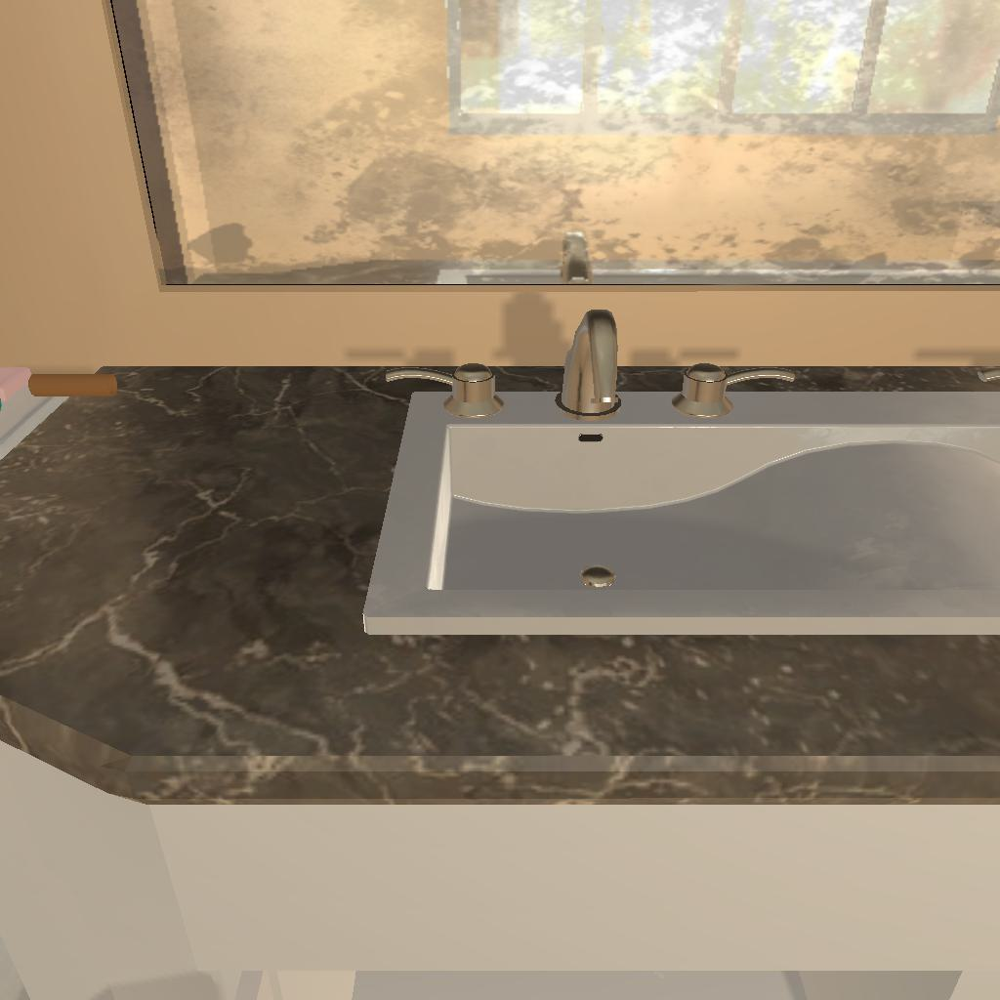

---------------------------------------------------------task: 11---------------------------------------------------------
--------------------------------------------------------------------------------------------------------------------------------------------------------------------
--------------------------------------------------------------------------------------------------------------------------------------------------------------------
Step:--------------------------------------------------------------------------19-------------------------------------------------------------------------------
----------------------------------------
VLM Prompt:
Image1:
Image2:
Image3:
**Instruction**
1. Analyze the provided images to identify all visible household objects and compare the difference between images (e.h. whether the object is opened or not and taken on hand or not), focusing on those relevant to the task description "put a clean soapbar in bathtubbasin."
2. Use the analysis of images and the task hint "The agent must find an object of the desired type, pick it up, go to a sink or a basin, clean the object with a sink or basin, and then find the correct location to place it and put it down there. The agent does not need to use soap bottle or faucet to clean the object, and the agent just needs to do action that is "clean the object with the sink or sink basin"." to answer the question: what is the most reasonable action in the choices for the task description "put a clean soapbar in bathtubbasin"?
3. Decide and write the answer using the template: The answer is: (i): , where i is the real number. If there is no desired object in images, search every place based on **Initial Observation** to find the object. And if no one is exactly correct, choose a similar answer.
**Initial Observation**
You are in the middle of a room. Looking quickly around you, you can see bathtub (1), bathtubbasin (1), toilet (1), cabinet (1-2), countertop (1), sink (1), sinkbasin (1), garbagecan (1)
**Answer Choices**
(1): go to bathtub 1
(2): go to toilet 1
(3): go to cabinet 1
(4): go to sink 1
(5): go to sinkbasin 1
(6): go to cabinet 2
(7): go to garbagecan 1
(8): take faucet 1 from countertop 1
(9): take toiletpaper 1 from countertop 1
(10): take soapbar 1 from countertop 1
(11): take faucet 2 from countertop 1
(12): take cloth 1 from countertop 1
(13): take spraybottle 1 from countertop 1
(14): examine countertop 1
**Answer**
Let's think step by step by following the instructions.
----------------------------------------
----------------------------------------
Original Response:
First, we analyze the provided images:
Image 1 shows a bathtub with a soapbar inside it. There are no other objects visible in the image.
Image 2 and Image 3 are identical and show a sink with a faucet, and a countertop with no visible soapbar or other objects that can be picked up.
Based on the task description "put a clean soapbar in bathtubbasin," we need to find a soapbar, clean it, and then place it in the bathtub basin.
From the initial observation, we know there is a countertop (1) and a cabinet (1-2) where we might find a soapbar. Since the countertop in the images does not show a soapbar, it is likely that we need to search the cabinet.
Therefore, the most reasonable action from the choices would be to first go to the cabinet to look for a soapbar. Once we find it, we can clean it in the sink or sink basin, and then place it in the bathtub basin.
The answer is: (3): go to cabinet 1
----------------------------------------
----------------------------------------
>>> Refine Original VLM Response and Get Pure Action: go to cabinet 1
----------------------------------------
-----------------------------------------------------------------
Running time: 21.011600494384766 seconds
Total Money: 6.218520000000007
-----------------------------------------------------------------
-----------------------------------------------------------------
Text Observation:You arrive at loc 3. The cabinet 1 is open. On the cabinet 1, you see a faucet 1, a spraybottle 1, a toiletpaper 2, a cloth 1, a toiletpaper 1, a plunger 1, a candle 1, and a scrubbrush 1.
-----------------------------------------------------------------
UNSUCCEED